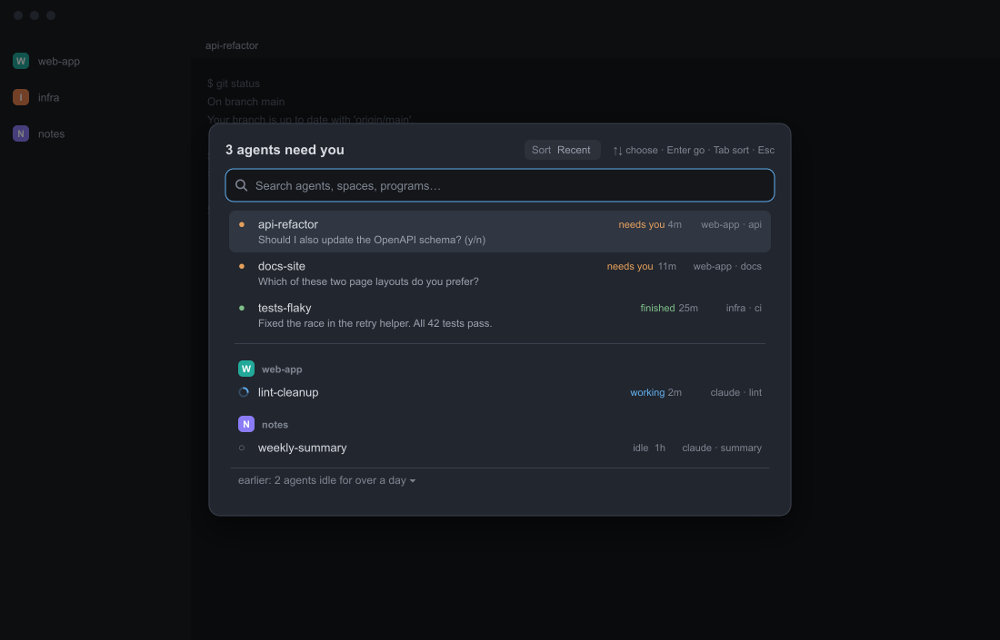

curl -fsSL https://raw.githubusercontent.com/miguelalexanderdiaz/herdr-agents-waiting/main/install/install.sh | shAgents waiting
One dialog that answers "which of my agents needs me?" It lists the agents that are blocked on you, then the ones that have finished, each with what it asked and how long it has waited. Under a rule it lists every other agent, grouped by space.

What you get
- Needs you first. Blocked agents, then finished ones, each group in the order Herdr last saw them change. Each row shows the agent's name, its status, how long it has been in that status, its space and tab, and a one-line preview of what it asked.
- Everyone else below a rule, grouped by space with the space's color. Agents idle for more than a day fold into an "earlier" line.
- Search across name, program, space, tab, title and the status words. Every word you type must match.
- Three sorts for the lower list: Recent, Oldest and Space order. Tab cycles them and Herdr remembers your choice.
- Standalone. One folder, one key, no other mod needed.
Status
The original mod ran in the author's Herdr on macOS. The changes made since then pass herdr-app check (it renders the mod once) and the unit tests; they have not been watched in a live window yet. Tested on Herdr 0.1.12 only. The list of what nobody has observed, each with a 30-second check, is on Troubleshooting.
Quick start
macOS and Linux
Windows (PowerShell)
irm https://raw.githubusercontent.com/miguelalexanderdiaz/herdr-agents-waiting/main/install/install.ps1 | iexIt asks before writing anything. Then Ctrl+Shift+A opens the list and Esc closes it. With an agent, by hand, and how to remove it: Install.
Read next
- Install
One command, or with an agent or by hand; uninstall.
- Usage
What it lists, keys, search, sorts, waiting times, previews.
- Configuration
Props, shared keys, rebinding, notes for layout authors.
- Troubleshooting
When a key, icon, time or preview is missing; what is not yet verified.
Privacy and permissions
In short:
- Network: none.
- Runs: only Herdr's own
hc read <address> --lines 60, while the dialog is open, for blocked and finished agents. Never Herdr's generalexec. - Reads: those agents' screen text (the visible screen plus up to 60 lines of history). One line per agent stays in memory and is dropped when the dialog closes. It also reads the shared values
agents.sinceandspace.colors. - Writes: no files. The mod's local storage keeps a first-seen time per agent address (
attention.seen, no screen text); Herdr's shared state keeps your sort (attention.sort). - Changes: nothing in your agents. Choosing a row focuses it; no input is sent to any terminal.
Herdr does not sandbox mods, so this is a promise of this code, not a limit set by Herdr. scripts/validate.mjs checks it on every change; to see for yourself, read main.js or run the rg commands in AGENTS.md.